Formulations¶
Second-order force constants¶
Potential energy of phonon system is represented as functions of atomic positions:
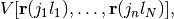
where 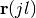 is the point of the  -th atom in
the
-th atom in
the  -th unit cell and
-th unit cell and  and
and  are the number
of atoms in a unit cell and the number of unit cells, respectively. A
force and a second-order force constant 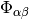
are given by
are the number
of atoms in a unit cell and the number of unit cells, respectively. A
force and a second-order force constant 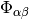
are given by
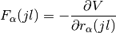
and
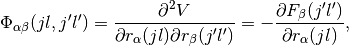
respectively, where  ,
,  , ..., are the
Cartesian indices, , 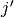, ..., are the indices of
atoms in a unit cell, and , 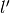, ..., are
the indices of unit cells. In the finite displacement method, the
equation for the force constants is approximated as
, ..., are the
Cartesian indices, , 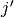, ..., are the indices of
atoms in a unit cell, and , 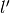, ..., are
the indices of unit cells. In the finite displacement method, the
equation for the force constants is approximated as
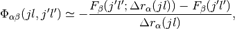
where 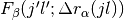 are the forces on atoms with a finite displacement 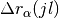 and usually 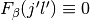.
Modified Parlinski-Li-Kawazoe method¶
The following is a modified and simplified version of the Parlinski-Li-Kawazoe method, which is just a numerical fitting approach to obtain force constants from forces and displacements.
The last equation above is represented by matrices as
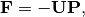
where  , , and
for a pair of atoms, e.g. 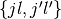, are given by
, , and
for a pair of atoms, e.g. 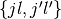, are given by
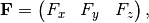
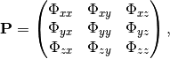
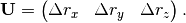
The matrix equation is expanded for number of forces and displacements as follows:
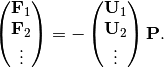
With sufficient number of atomic displacements, this may be solved by pseudo inverse such as
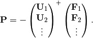
Required number of atomic displacements to solve the simultaneous equations may be reduced using site-point symmetries. The matrix equation can be written using a symmetry operation as
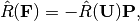
where 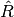 is the site symmetry
operation centring at
. 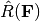 and 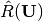 are defined as
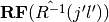 and  ,
respectively, where
,
respectively, where  is the matrix
representation of the rotation operation. The combined
simultaneous equations are built such as
is the matrix
representation of the rotation operation. The combined
simultaneous equations are built such as
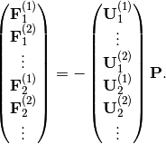
where the superscript with parenthesis gives the index of site-symmetry operations. This is solved by pseudo inverse.
Dynamical matrix¶
In phonopy, a phase convention of dynamical matrix is used as follows:
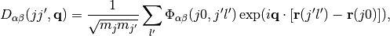
where  is the atomic mass and is the wave
vector. An equation of motion is written as
is the atomic mass and is the wave
vector. An equation of motion is written as
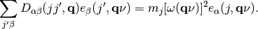
where the eigenvector of the band index  at
is obtained by the diagonalization of
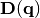:
at
is obtained by the diagonalization of
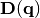:
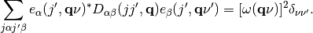
The atomic displacements  are given as
are given as
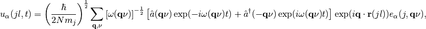
where 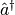 and are the creation and
annihilation operators of phonon,  is the reduced Planck
constant, and
is the reduced Planck
constant, and  is the time.
is the time.
Non-analytical term correction¶
To correct long range interaction of macroscopic electric field
induced by polarization of collective ionic motions near the
 -point, non-analytical term is added to dynamical matrix
(Non-analytical term correction). At
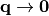, the dynamical matrix with
non-analytical term is given by,
-point, non-analytical term is added to dynamical matrix
(Non-analytical term correction). At
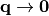, the dynamical matrix with
non-analytical term is given by,
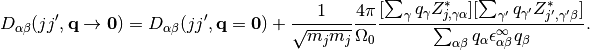
Phonon frequencies at general q-points are interpolated by the method of Wang et al. (Interpolation scheme at general q-points with non-analytical term correction).
Physical unit conversion¶
Phonopy calculates phonon frequencies based on input values from
users. In the default case, the physical units of distance, atomic
mass, force, and force constants are supposed to be
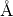,  ,
,  , and
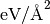, respectively, and the physical unit of the
phonon frequency is converted to THz. This conversion is made as
follows:
, and
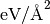, respectively, and the physical unit of the
phonon frequency is converted to THz. This conversion is made as
follows:
Internally phonon frequency has the physical unit of
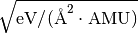 in angular
frequency. To convert this unit to THz (not angular frequency), the
calculation of sqrt(EV/AMU)/Angstrom/(2*pi)/1e12 is made. EV,
AMU, Angstrom are the values to convert them to those in the
SI base unit, i.e., to Joule, kg, and metre, respectively. These values
implemented in phonopy are found at a phonopy github page. This
unit conversion factor can be manually specified. See
FREQUENCY_CONVERSION_FACTOR.
The unit conversion factor in the BORN file is multiplied with the second
term of the right hand side of the equation in
Non-analytical term correction where this equation is written
with atomic units (Gonze and Lee, 1997).
The physical unit of the part of the equation corresponding to force
constants:
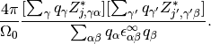
is ![[\text{hartree}/\text{bohr}^2]](_images/math/142cf882644dae869d54b71f914212f4f9ab59b2.png) . In the default case for the
VASP interface, internally
. In the default case for the
VASP interface, internally  is given in
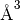. In total, the necessary unit conversion is
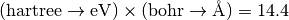. In the default case of the Wien2k
interface, the conversion factor is 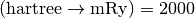. For the other interfaces, the
conversion factors are similarly calculated following the unit
systems employed in phonopy (Interfaces to calculators).
is given in
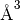. In total, the necessary unit conversion is
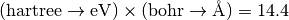. In the default case of the Wien2k
interface, the conversion factor is 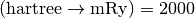. For the other interfaces, the
conversion factors are similarly calculated following the unit
systems employed in phonopy (Interfaces to calculators).
Commensurate points¶
In phonopy, so-called commensurate points mean the q-points whose waves are confined in the supercell used in the phonon calculation.
To explain about the commensurate points, let basis vectors of a primitive cell in direct space cell be the column vectors 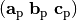 and those of the supercell be 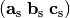. The transformation of the basis vectors from the primitive cell to the supercell is written as
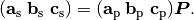
is given as a  matrix and its
elements are all integers, which is a constraint we have. The
resolution for q-points being the commensurate points is determined by
since one period of a wave has to be bound by
any of lattice points inside the supercell. Therefore the number of
commensurate points becomes the same as the number of the primitive
cell that can be contained in the supercell, i.e.,
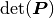.
matrix and its
elements are all integers, which is a constraint we have. The
resolution for q-points being the commensurate points is determined by
since one period of a wave has to be bound by
any of lattice points inside the supercell. Therefore the number of
commensurate points becomes the same as the number of the primitive
cell that can be contained in the supercell, i.e.,
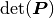.
Then let the basis vectors in reciprocal space be the column vectors 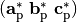. Note that often reciprocal vectors are deifned by row vectors, but column vectors are chosen here to formulate. Formally we see the set of besis vectors are matrices, we have the following relation:
Similarly for the supercell, we define a relation
Then
To multiply an arbitrary q-point on both sides
we find the constraint of a q-point being one of the commensurate points is the elements of to be integers.